▶ Video del recorrido
El recorrido principal de la fase, como lo haría un almacenero.
Subir boleta ya funciona: sacas la foto, la app la lee, revisas producto por producto (con sugerencias de cuál es) y al confirmar se suma el stock y se recalcula el costo. La app aprende para la próxima vez. La foto queda guardada en privado.
El recorrido principal de la fase, como lo haría un almacenero.
Dos botones grandes: sacar foto o elegir de la galería. Abajo, un ejemplo de foto bien tomada y las últimas compras (la que dice “Falta revisar” está esperando que la confirmes).
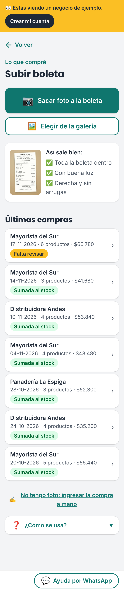
Mientras la app lee la foto (unos segundos), se ve la foto y un aviso para no cerrar la pantalla. La foto se achica en el celular antes de subir.
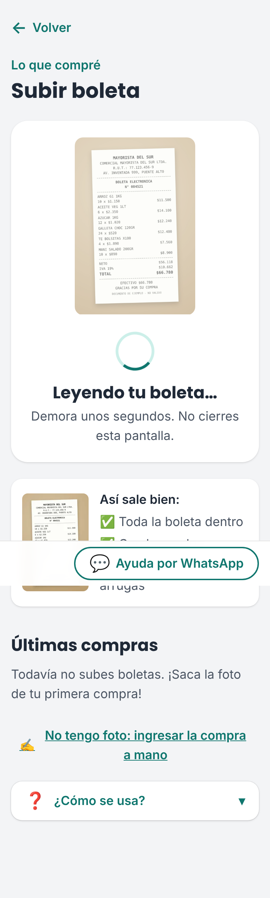
Si la foto está borrosa, oscura o cortada, la app lo dice en palabras simples y no guarda nada. Se vuelve a sacar al tiro.
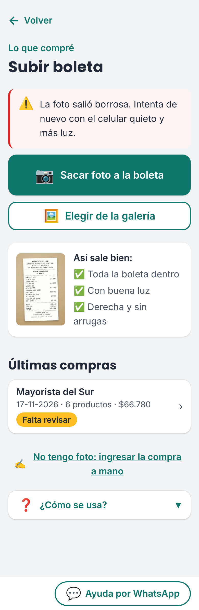
Primero lo general: a quién le compraste, la fecha y el total. Tocando la foto se ve grande.
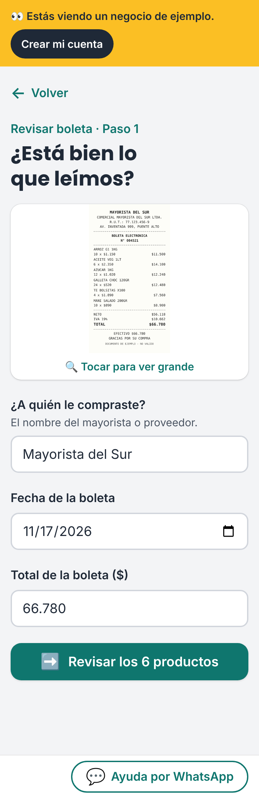
Un producto por pantalla. “✨ La app lo reconoció” porque ya lo compraste antes a este proveedor. Se puede cambiar la cantidad o el precio si la IA leyó mal.
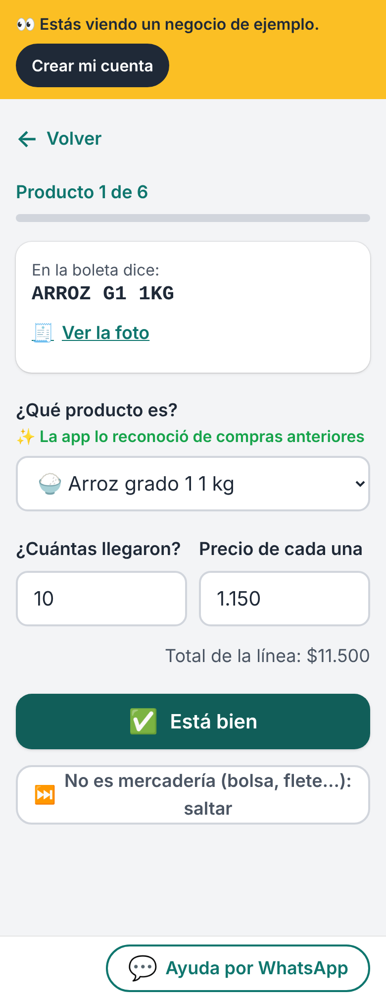
Si es algo que nunca habías comprado (maní salado), la app propone “Es un producto nuevo”.
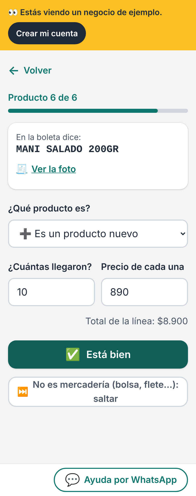
Nombre, categoría y a cuánto lo venderás. La app sugiere el precio con tu margen objetivo: “Te costó $890. Con tu margen de 35% sugerimos $1.370”.
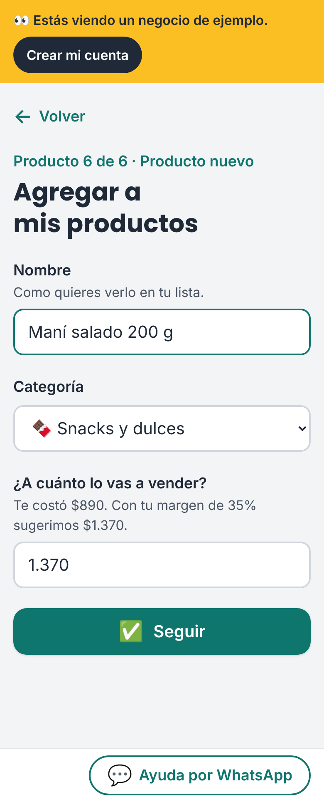
Todo lo que se sumará a tu stock, con el total. Si la suma no coincide con el total de la boleta, la app avisa. Tocando un producto se puede corregir.
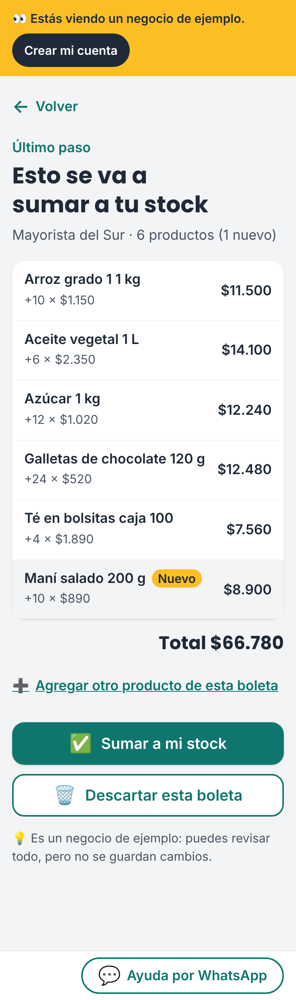
En el Almacén Don Pepe se puede recorrer todo, pero al final no se suma nada. Así el demo siempre queda igual.
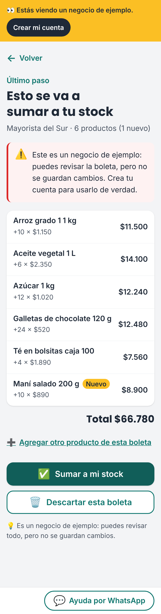
Confirmación visible: “Listo, se sumaron 6 productos a tu stock”. La boleta queda en “Últimas compras” como “Sumada al stock”.
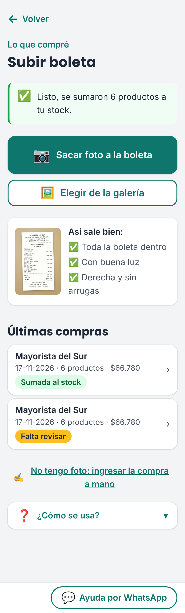
En la ficha del arroz aparece la compra (“Lo que compré +10”) y el nuevo stock. El costo se recalcula solo.
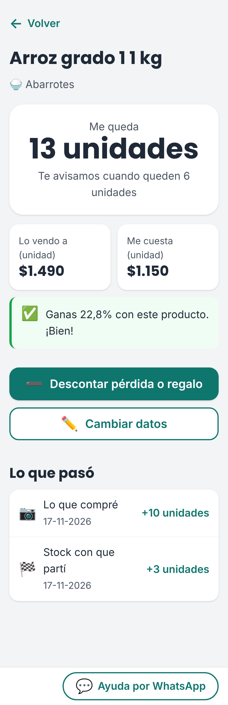
Cada compra confirmada queda guardada con sus productos y su foto (en un espacio privado, con enlaces que vencen).
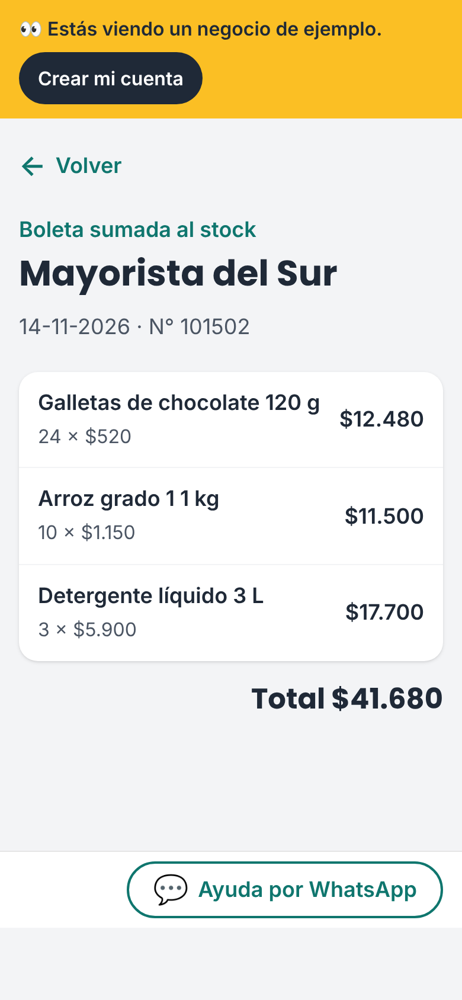
Si no hay foto (o la IA no pudo leerla), se puede ingresar a mano con los mismos pasos.
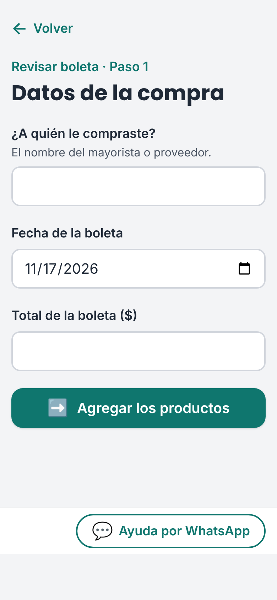
“Mi stock” ahora avisa si hay boletas por revisar y muestra la última compra.
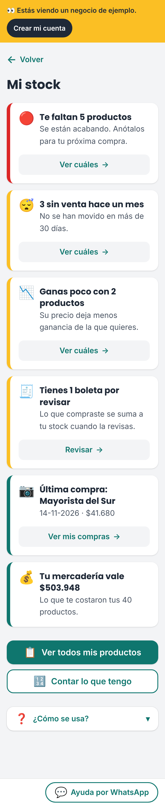